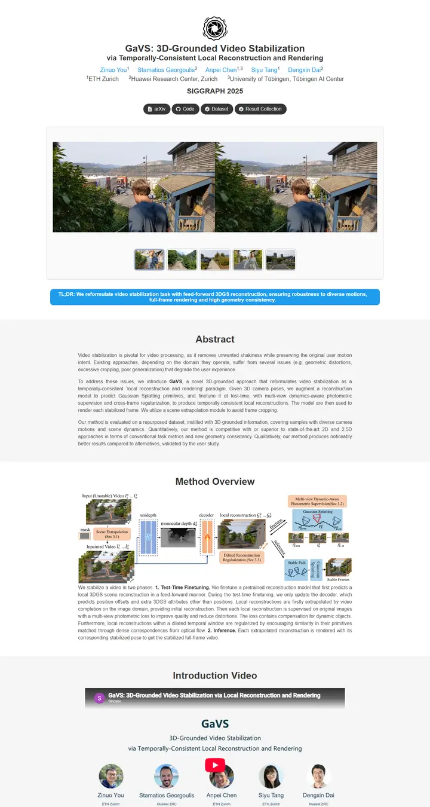

GaVS: 3D-Grounded Video Stabilization via Temporally-Consistent Local Reconstruction and Rendering
A steady camera in a gray card: a black aperture badge, side-by-side shaky and stable clips, a strip of thumbnails to pick from, and one bright blue TL;DR pill.

Checked against the rendered page. Declared Google Sans and Noto Sans never load, so text renders in Arial. Weak acceptance wording flagged in selection.
Why it is here
Adds variety with a carded video teaser and thumbnail selector, a highlighted TL;DR pill and alternating grey/white section bands.
Overview
Color Palette
Typography
Google Sans and Noto Sans
GaVS: 3D-Grounded Video Stabilization via Temporally-Consistent Local
Abstract · Method · Results · BibTeX — 0123456789
Spacing & Shape
Page Modules
Guidelines
More like this

Scaling Text-Rich Image Understanding via Code-Guided Synthetic Multimodal Data Generation
A university press catalogue: small-caps serif title, a colour wheel of specimens and an earthy bar chart.

DICE-BENCH: Evaluating the Tool-Use Capabilities of Large Language Models in Multi-Round, Multi-Party Dialogues
A Nerfies page with a game-box cover: a charcoal dice banner stamps the identity, then pastel brand-tinted pills and a grey carousel strip carry you into a quiet two-column method read.

TUNA: Comprehensive Fine-grained Temporal Understanding Evaluation on Dense Dynamic Videos
A benchmark that leads with its scoreboard: a fish-logo small-caps wordmark, a gradient venue line, then a full-width grey-headed leaderboard with zebra rows and blue model links.

Gesturing Toward Abstraction: Multimodal Convention Formation in Collaborative Physical Tasks
A seminar handout on clean paper: a big soft headline, six charcoal tabs, and a teal-and-magenta comic strip of hands explaining blocks.

Making Multimodal LLMs Reliable Chart Data Extractors: A Benchmark and Training Framework
A lab notebook opened to its best page: a framed video like a monitor bezel, emoji in the headline, and every figure pinned with a soft shadow.

What If Moderation Didn't Mean Suppression? A Case for Personalized Content Transformation
A quiet reading room with a purple ribbon on the lectern: slate sans headlines, Garamond prose, and one warm amber note pinned to the wall.